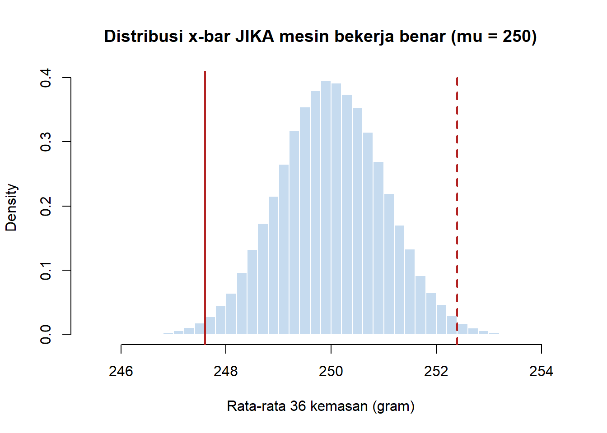
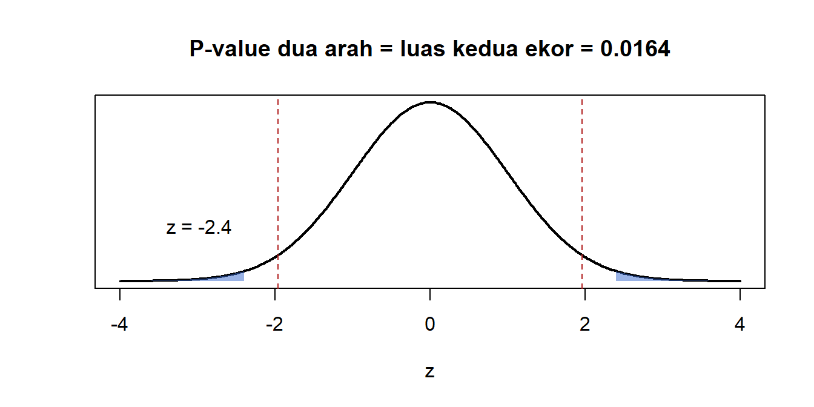
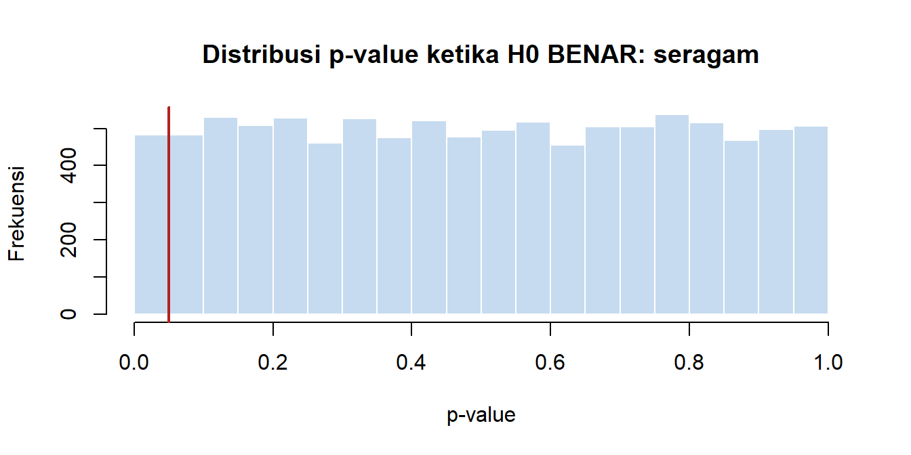
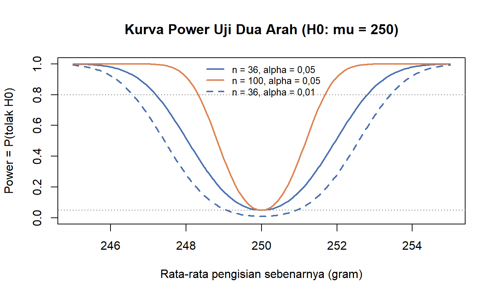

Program Studi: Data Science Konteks Sesi: Pertemuan 10 – Konsep dan Uji Hipotesis
Dalam sidang pengadilan berlaku asas praduga tak bersalah: terdakwa dianggap tidak bersalah sampai jaksa menghadirkan bukti yang cukup kuat untuk meyakinkan hakim sebaliknya. Jika bukti kurang kuat, putusannya adalah “tidak terbukti bersalah” – bukan “terbukti tidak bersalah”. Hakim juga bisa keliru: menghukum orang yang tidak bersalah, atau membebaskan orang yang bersalah.
Uji hipotesis bekerja dengan logika yang persis sama. Kita memulai dengan asumsi “tidak ada efek/perbedaan” (\(H_0\)), lalu bertanya: jika asumsi itu benar, seberapa mengejutkan data yang kita peroleh? Jika sangat mengejutkan, kita menolak asumsi tersebut. Pertemuan ini membangun kerangka konsepnya; Pertemuan 11–14 menerapkannya pada berbagai uji.
2.1 Tujuan Pembelajaran
Setelah menyelesaikan praktikum ini, mahasiswa mampu:
Merumuskan hipotesis nol (\(H_0\)) dan hipotesis alternatif (\(H_1\)), baik dua arah maupun satu arah.
Menjelaskan tingkat signifikansi (\(\alpha\)), statistik uji, nilai kritis, dan daerah penolakan.
Menghitung dan menafsirkan p-value dengan benar.
Mengambil keputusan (tolak \(H_0\) atau gagal menolak \(H_0\)) dan menuliskan kesimpulan dalam konteks.
Menjelaskan kesalahan Tipe I dan Tipe II, power, serta faktor yang memengaruhinya melalui simulasi.
Membedakan signifikansi statistik dan signifikansi praktis, serta mengenali penyalahgunaan p-value.
2.2 Peta Alur Belajar
Tahap
Bagian
Fokus
1
Logika Uji Hipotesis
Analogi pengadilan; “seberapa mengejutkan?”
2
Merumuskan Hipotesis
\(H_0\), \(H_1\); dua arah dan satu arah
3
Komponen Uji
\(\alpha\), statistik uji, nilai kritis, p-value
4
Prosedur Lima Langkah
Contoh lengkap dua arah dan satu arah
5
Hubungan dengan CI
Uji dua arah vs selang kepercayaan
6
Kesalahan Tipe I dan II
Simulasi \(\alpha\), \(\beta\), dan power
7
Menafsirkan dengan Bijak
Signifikansi praktis; miskonsepsi; p-hacking
8–9
Studi Kasus & Latihan Mandiri
Pemantauan kepatuhan baku mutu
10–12
Referensi Praktis
Kesalahan umum, cheat sheet R, glosarium
Praktikum ini hanya menggunakan base R (kecuali knitr::kable() untuk menampilkan tabel; paket ini sudah terpasang bersama Quarto/RStudio).
3 Logika Uji Hipotesis
Pengadilan
Uji Hipotesis
Praduga tak bersalah
\(H_0\) diasumsikan benar
Tuduhan jaksa
\(H_1\) (klaim yang ingin dibuktikan)
Bukti di persidangan
Data sampel dan statistik uji
Standar “tanpa keraguan yang wajar”
Tingkat signifikansi \(\alpha\)
Putusan bersalah
Tolak \(H_0\)
Putusan tidak terbukti bersalah
Gagal menolak \(H_0\) (bukan “menerima \(H_0\)”)
Menghukum orang tak bersalah
Kesalahan Tipe I
Membebaskan orang bersalah
Kesalahan Tipe II
3.1 Ilustrasi: Apakah Mesin Pengisi Masih Tepat?
Melanjutkan latihan Pertemuan 9: mesin kopi bubuk seharusnya mengisi rata-rata 250 gram dengan \(\sigma = 6\) gram. Sampel 36 kemasan menghasilkan \(\bar{x} = 247{,}6\) gram. Apakah mesin perlu dikalibrasi, atau selisih 2,4 gram itu sekadar kebetulan sampling?
Jika mesin benar (\(\mu = 250\)), maka menurut CLT \(\bar{X} \sim N(250,\ 6/\sqrt{36} = 1)\). Kita lihat seberapa “jauh” 247,6 dari distribusi tersebut:
mu0 <-250; sigma <-6; n <-36; xbar <-247.6se <- sigma /sqrt(n)set.seed(10)xbar_jika_H0 <-replicate(100000, mean(rnorm(n, mu0, sigma)))hist(xbar_jika_H0, breaks =60, col ="#c6dbef", border ="white", freq =FALSE,main ="Distribusi x-bar JIKA mesin bekerja benar (mu = 250)",xlab ="Rata-rata 36 kemasan (gram)")abline(v =c(xbar, 2* mu0 - xbar), col ="firebrick", lwd =2, lty =c(1, 2))

# seberapa sering selisih sebesar ini terjadip_sim <-mean(abs(xbar_jika_H0 - mu0) >=abs(xbar - mu0))p_sim
[1] 0.01579
Jika mesin benar, rata-rata yang meleset 2,4 gram atau lebih (ke arah mana pun) hanya terjadi sekitar 1.6% dari waktu. Angka inilah yang disebut p-value. Karena sangat jarang, kita punya alasan kuat untuk meragukan bahwa mesin bekerja benar.
4 Merumuskan Hipotesis
4.1 Hipotesis Nol dan Alternatif
Hipotesis Nol (\(H_0\))
Hipotesis Alternatif (\(H_1\) atau \(H_a\))
Isi
“Tidak ada efek, perbedaan, atau perubahan”; status quo
Klaim yang ingin dibuktikan peneliti
Tanda
Selalu memuat kesamaan: \(=\), \(\le\), atau \(\ge\)
\(\ne\), \(>\), atau \(<\)
Posisi dalam uji
Diasumsikan benar selama perhitungan
Diterima hanya jika bukti kuat
Penting
Aturan penting: hipotesis selalu dinyatakan tentang parameter populasi (\(\mu\), \(p\), \(\sigma\)), bukan statistik sampel. Menulis “\(H_0: \bar{x} = 250\)” adalah keliru, karena \(\bar{x}\) sudah kita ketahui.
4.2 Tiga Bentuk Hipotesis
Bentuk
\(H_0\)
\(H_1\)
Daerah penolakan
Contoh pertanyaan
Dua arah
\(\mu = \mu_0\)
\(\mu \ne \mu_0\)
Kedua ekor
“Apakah rata-rata pengisian berbeda dari 250 g?”
Satu arah kanan
\(\mu \le \mu_0\)
\(\mu > \mu_0\)
Ekor kanan
“Apakah rata-rata TSS melebihi baku mutu?”
Satu arah kiri
\(\mu \ge \mu_0\)
\(\mu < \mu_0\)
Ekor kiri
“Apakah umur baterai kurang dari klaim 20 jam?”
4.3 Menerjemahkan Kalimat Menjadi Hipotesis
Kata kunci dalam klaim
Tanda di \(H_1\)
berbeda, berubah, tidak sama
\(\ne\)
lebih dari, meningkat, melebihi, lebih baik
\(>\)
kurang dari, menurun, lebih rendah, lebih cepat (waktu)
\(<\)
Peringatan
Tentukan arah sebelum melihat data. Memilih uji satu arah setelah melihat arah selisih pada data adalah kecurangan: p-value menjadi separuhnya secara tidak sah. Jika ragu, gunakan uji dua arah.
5 Komponen Uji Hipotesis
5.1 Tingkat Signifikansi (\(\alpha\))
\(\alpha\) adalah batas peluang kesalahan Tipe I yang bersedia kita tanggung – peluang menolak \(H_0\) padahal \(H_0\) benar. Nilai yang umum: 0,05; 0,01; atau 0,10. \(\alpha\) ditetapkan sebelum data dianalisis, berdasarkan seberapa mahal akibat kesalahan Tipe I.
5.2 Statistik Uji
Statistik uji mengukur seberapa jauh estimasi sampel dari nilai \(H_0\), dalam satuan standard error:
\[
\text{statistik uji} = \frac{\text{estimasi} - \text{nilai di } H_0}{\text{SE}}
\qquad\Rightarrow\qquad
z = \frac{\bar{x} - \mu_0}{\sigma / \sqrt{n}}
\]
z_hitung <- (xbar - mu0) / sez_hitung
[1] -2.4
Rata-rata sampel berada 2.4 standard error di bawah nilai yang diklaim.
5.3 Nilai Kritis dan Daerah Penolakan
Nilai kritis adalah batas yang memisahkan daerah “tidak mengejutkan” dan daerah penolakan, ditentukan oleh \(\alpha\) dan arah uji.
alpha <-0.05c(Dua_arah =qnorm(1- alpha /2), Kanan =qnorm(1- alpha), Kiri =qnorm(alpha))
Daerah merah adalah daerah penolakan, luasnya \(\alpha = 0{,}05\). Pada uji dua arah, \(\alpha\) dibagi dua ke kedua ekor.
5.4 P-Value
Tip
P-value adalah peluang memperoleh statistik uji seekstrem atau lebih ekstrem daripada yang teramati, dengan asumsi \(H_0\) benar.
Arah uji
P-value
Dua arah
\(2 \times P(Z \ge \lvert z \rvert)\)
Kanan
\(P(Z \ge z)\)
Kiri
\(P(Z \le z)\)
p_dua <-2* (1-pnorm(abs(z_hitung)))p_dua
[1] 0.01639507
x <-seq(-4, 4, length.out =400)plot(x, dnorm(x), type ="l", lwd =2, xlab ="z", ylab ="", yaxt ="n",main =paste0("P-value dua arah = luas kedua ekor = ", round(p_dua, 4)))for (bts inlist(c(-4, -abs(z_hitung)), c(abs(z_hitung), 4))) { xs <-seq(bts[1], bts[2], length.out =100)polygon(c(bts[1], xs, bts[2]), c(0, dnorm(xs), 0),col =rgb(0.2, 0.4, 0.8, 0.5), border =NA)}abline(v =c(-1.96, 1.96), lty =2, col ="firebrick")text(z_hitung, 0.12, labels =paste0("z = ", round(z_hitung, 2)), pos =2)

5.5 Keputusan: Dua Pendekatan yang Setara
Pendekatan
Tolak \(H_0\) jika
Contoh mesin kopi
Nilai kritis
Statistik uji jatuh di daerah penolakan
\(\lvert z \rvert = 2{,}4 > 1{,}96 \Rightarrow\) tolak
P-value
p-value \(\le \alpha\)
\(0{,}0164 \le 0{,}05 \Rightarrow\) tolak
Kedua pendekatan selalu memberi keputusan yang sama. Pendekatan p-value lebih informatif karena menunjukkan seberapa kuat buktinya, bukan sekadar lolos atau tidak.
P-value
Kekuatan bukti melawan \(H_0\) (pedoman kasar)
\(> 0{,}10\)
Lemah/tidak ada
\(0{,}05\)–\(0{,}10\)
Lemah–sedang
\(0{,}01\)–\(0{,}05\)
Cukup kuat
\(< 0{,}01\)
Sangat kuat
Peringatan
“Gagal menolak \(H_0\)” tidak sama dengan “\(H_0\) benar”. Sama seperti “tidak terbukti bersalah” tidak berarti “terbukti tidak bersalah”. Bisa jadi efeknya memang ada tetapi sampel kita terlalu kecil untuk mendeteksinya.
6 Prosedur Lima Langkah
Langkah
Isi
1
Rumuskan \(H_0\) dan \(H_1\) (tentukan arah)
2
Tetapkan \(\alpha\)
3
Pilih uji yang sesuai, periksa asumsi, hitung statistik uji
4
Tentukan nilai kritis dan/atau p-value, ambil keputusan
5
Tulis kesimpulan dalam konteks masalah (bukan sekadar “tolak \(H_0\)”)
Kita bungkus perhitungan uji z satu sampel dalam sebuah fungsi agar dapat dipakai ulang.
uji_z <-function(xbar, mu0, sigma, n, arah =c("dua", "kanan", "kiri"),alpha =0.05) { arah <-match.arg(arah) z <- (xbar - mu0) / (sigma /sqrt(n)) p <-switch(arah,dua =2* (1-pnorm(abs(z))),kanan =1-pnorm(z),kiri =pnorm(z)) kritis <-switch(arah,dua =qnorm(1- alpha /2),kanan =qnorm(1- alpha),kiri =qnorm(alpha))data.frame(z =round(z, 4), z_kritis =round(kritis, 4),p_value =signif(p, 4),keputusan =ifelse(p <= alpha, "Tolak H0", "Gagal menolak H0"))}
uji_z(xbar =247.6, mu0 =250, sigma =6, n =36, arah ="dua")
z z_kritis p_value keputusan
1 -2.4 1.96 0.0164 Tolak H0
\(\lvert z \rvert = 2{,}4 > 1{,}96\) dan p-value \(\approx 0{,}016 < 0{,}05 \Rightarrow\) tolak \(H_0\).
Kesimpulan: pada taraf signifikansi 5%, terdapat bukti yang cukup bahwa rata-rata pengisian mesin berbeda dari 250 gram (data menunjukkan cenderung kurang). Mesin sebaiknya diperiksa dan dikalibrasi.
6.2 Contoh 2 (Satu Arah Kanan): Klaim Waktu Pengiriman
Sebuah layanan logistik mengklaim rata-rata waktu pengirimannya paling lama 48 jam. Asosiasi konsumen curiga waktunya lebih lama. Data historis menunjukkan \(\sigma = 10\) jam. Sampel 50 pengiriman menghasilkan \(\bar{x} = 50{,}1\) jam.
\(H_0: \mu \le 48\) (klaim benar); \(H_1: \mu > 48\) (klaim tidak benar – lebih lama).
\(\alpha = 0{,}05\).
uji_z(xbar =50.1, mu0 =48, sigma =10, n =50, arah ="kanan")
z z_kritis p_value keputusan
1 1.4849 1.6449 0.06878 Gagal menolak H0
Kesimpulan: p-value \(\approx 0{,}069 > 0{,}05\), sehingga gagal menolak \(H_0\). Pada taraf 5%, bukti belum cukup untuk menyatakan rata-rata waktu pengiriman melebihi 48 jam. Ini tidak membuktikan klaim perusahaan benar; dengan p-value 0,07, ada indikasi lemah yang layak ditindaklanjuti dengan sampel lebih besar.
Perhatikan: jika asosiasi konsumen memakai uji dua arah, p-value-nya menjadi dua kali lipat (sekitar 0,14). Arah uji harus ditentukan dari pertanyaan penelitian sebelum melihat data.
7 Hubungan Uji Dua Arah dan Selang Kepercayaan
Uji dua arah dengan taraf \(\alpha\) setara dengan memeriksa apakah \(\mu_0\) berada di dalam selang kepercayaan \((1-\alpha) \times 100\%\):
\(\mu_0\) di luar CI 95% \(\iff\) tolak \(H_0\) pada \(\alpha = 0{,}05\) (dua arah).
\(\mu_0\) di dalam CI 95% \(\iff\) gagal menolak \(H_0\).
ci <-247.6+c(-1, 1) *qnorm(0.975) *6/sqrt(36)round(ci, 3)
[1] 245.64 249.56
# FALSE -> 250 di luar selang -> konsisten dengan "tolak H0"250>= ci[1] &250<= ci[2]
[1] FALSE
Selang kepercayaan lebih informatif: selain keputusan, ia menunjukkan rentang nilai \(\mu\) yang masuk akal – di sini rata-rata pengisian kemungkinan antara 245.6 dan 249.6 gram, sehingga kekurangannya kemungkinan antara 0.4 dan 4.4 gram per kemasan.
8 Kesalahan Tipe I, Tipe II, dan Power
8.1 Tabel Keputusan
\(H_0\) benar
\(H_0\) salah
Tolak \(H_0\)
Kesalahan Tipe I (false positive), peluang = \(\alpha\)
Keputusan benar, peluang = power = \(1-\beta\)
Gagal menolak \(H_0\)
Keputusan benar, peluang = \(1-\alpha\)
Kesalahan Tipe II (false negative), peluang = \(\beta\)
Konteks
Kesalahan Tipe I
Kesalahan Tipe II
Mesin pengisi (\(H_0\): mesin tepat)
Menghentikan produksi untuk kalibrasi padahal mesin baik
Mesin terus mengisi kurang; konsumen dirugikan
Tes penyakit (\(H_0\): sehat)
Orang sehat didiagnosis sakit
Orang sakit tidak terdeteksi
Filter spam (\(H_0\): bukan spam)
Email penting masuk folder spam
Spam lolos ke kotak masuk
Uji A/B (\(H_0\): desain baru tidak lebih baik)
Meluncurkan desain yang sebenarnya tidak lebih baik
Melewatkan desain yang sebenarnya lebih baik
8.2 Simulasi: Kesalahan Tipe I Terjadi Sekitar \(\alpha\) dari Waktu
Jika mesin benar-benar tepat (\(\mu = 250\)) dan kita menguji 10.000 sampel berbeda, berapa kali kita keliru menolak \(H_0\)?
set.seed(101)p_values_H0 <-replicate(10000, { x <-rnorm(36, mean =250, sd =6) z <- (mean(x) -250) / (6/6)2* (1-pnorm(abs(z)))})mean(p_values_H0 <=0.05) # proporsi kesalahan Tipe I
[1] 0.0482
hist(p_values_H0, breaks =20, col ="#c6dbef", border ="white",main ="Distribusi p-value ketika H0 BENAR: seragam",xlab ="p-value", ylab ="Frekuensi")abline(v =0.05, col ="firebrick", lwd =2)

Ketika \(H_0\) benar, p-value tersebar merata antara 0 dan 1; sekitar 5% di antaranya jatuh di bawah 0,05 murni karena kebetulan. Itulah makna \(\alpha\).
8.3 Simulasi: Kesalahan Tipe II dan Power
Sekarang anggap mesin benar-benar mengisi rata-rata 248 gram (\(H_0\) salah). Seberapa sering uji kita mendeteksinya?
power_sim <-function(mu_benar, n, alpha =0.05, B =5000) {mean(replicate(B, { z <- (mean(rnorm(n, mu_benar, 6)) -250) / (6/sqrt(n))2* (1-pnorm(abs(z))) <= alpha }))}power_teori <-function(mu_benar, n, alpha =0.05) { k <-qnorm(1- alpha /2) d <- (mu_benar -250) / (6/sqrt(n))pnorm(-k - d) +1-pnorm(k - d)}set.seed(102)c(Power_simulasi =power_sim(248, 36),Power_teori =round(power_teori(248, 36), 4),Beta_teori =round(1-power_teori(248, 36), 4))
Dengan \(n = 36\), uji hanya mendeteksi selisih 2 gram sekitar 52% dari waktu; sekitar 48% dari waktu mesin yang salah setel lolos (kesalahan Tipe II).
8.4 Kurva Power: Faktor yang Memengaruhinya
mu_seq <-seq(245, 255, by =0.05)plot(mu_seq, power_teori(mu_seq, 36), type ="l", lwd =2, col ="#4C72B0",ylim =c(0, 1), xlab ="Rata-rata pengisian sebenarnya (gram)",ylab ="Power = P(tolak H0)",main ="Kurva Power Uji Dua Arah (H0: mu = 250)")lines(mu_seq, power_teori(mu_seq, 100), lwd =2, col ="#DD8452")lines(mu_seq, power_teori(mu_seq, 36, alpha =0.01), lwd =2, lty =2,col ="#4C72B0")abline(h =c(0.05, 0.8), lty =3, col ="grey50")legend("top", bty ="n", lwd =2, lty =c(1, 1, 2),col =c("#4C72B0", "#DD8452", "#4C72B0"), cex =0.8,legend =c("n = 36, alpha = 0,05", "n = 100, alpha = 0,05","n = 36, alpha = 0,01"))

Faktor
Jika dinaikkan
Power
Besar efek sebenarnya (\(\lvert\mu - \mu_0\rvert\))
Selisih makin besar
Naik
Ukuran sampel \(n\)
SE mengecil
Naik
\(\alpha\)
Daerah penolakan melebar
Naik (tetapi risiko Tipe I naik)
Variabilitas \(\sigma\)
SE membesar
Turun
Tepat di \(\mu = 250\) (saat \(H_0\) benar), kurva menyentuh \(0{,}05 = \alpha\). Trade-off: memperkecil \(\alpha\) (garis putus-putus) mengurangi kesalahan Tipe I tetapi menurunkan power (menambah kesalahan Tipe II). Satu-satunya cara mengurangi keduanya sekaligus adalah memperbesar sampel.
Konvensi yang umum dipakai: rancang studi agar power minimal 0,80 untuk efek terkecil yang dianggap penting.
n_power <-function(delta, sigma, alpha =0.05, power =0.80) {ceiling(((qnorm(1- alpha /2) +qnorm(power)) * sigma / delta)^2)}# sampel agar selisih 2 gram terdeteksi dengan power 80%n_power(delta =2, sigma =6)
[1] 71
9 Menafsirkan Hasil Uji dengan Bijak
9.1 Signifikansi Statistik vs Signifikansi Praktis
Dengan sampel sangat besar, selisih yang sangat kecil pun menjadi “signifikan secara statistik”.
knitr::kable(rbind("n = 36"=uji_z(xbar =249.8, mu0 =250, sigma =6, n =36),"n = 100.000"=uji_z(xbar =249.8, mu0 =250, sigma =6, n =100000)))
Selisih 0,2 gram: tidak signifikan vs sangat signifikan
z
z_kritis
p_value
keputusan
n = 36
-0.2000
1.96
0.8415
Gagal menolak H0
n = 100.000
-10.5409
1.96
0.0000
Tolak H0
Selisih 0,2 gram per kemasan (0,08%) kemungkinan tidak penting secara praktis, meskipun signifikan secara statistik pada \(n = 100.000\). Karena itu, selalu laporkan besar efek (selisih dan selang kepercayaannya), bukan hanya p-value.
9.2 Miskonsepsi tentang P-Value
Pernyataan
Benar/Salah
Penjelasan
“\(p = 0{,}016\) berarti peluang \(H_0\) benar adalah 1,6%.”
Salah
P-value dihitung dengan asumsi \(H_0\) benar; ia bukan peluang \(H_0\) benar
“\(p = 0{,}016\) berarti peluang hasil ini terjadi karena kebetulan adalah 1,6%.”
Salah
Sama dengan di atas, dengan kata-kata berbeda
“\(p > 0{,}05\) membuktikan tidak ada efek.”
Salah
Bisa jadi power rendah (sampel kecil)
“\(p\) yang lebih kecil berarti efeknya lebih besar.”
Salah
P-value dipengaruhi besar efek dan ukuran sampel
“\(p = 0{,}049\) dan \(p = 0{,}051\) memberi bukti yang sangat berbeda.”
Salah
Keduanya menunjukkan kekuatan bukti yang hampir sama
“Jika \(H_0\) benar, p-value kurang dari 0,05 terjadi sekitar 5% dari waktu.”
Benar
Inilah makna \(\alpha\)
9.3 Bahaya Uji Berganda (P-Hacking)
Jika kita menguji banyak hipotesis sekaligus – atau mencoba banyak cara analisis sampai ada yang “signifikan” – peluang setidaknya satu kesalahan Tipe I melonjak.
set.seed(103)# 20 "fitur" acak tanpa hubungan apa pun dengan target, masing-masing diujip20 <-replicate(20, { x <-rnorm(30, 0, 1)2* (1-pnorm(abs(mean(x) / (1/sqrt(30)))))})sum(p20 <=0.05)
[1] 1
Dengan 20 uji independen, peluang setidaknya satu hasil “signifikan” padahal semua \(H_0\) benar adalah sekitar 64%. Solusi sederhana adalah koreksi Bonferroni: pakai \(\alpha/m\) untuk setiap uji (misalnya \(0{,}05/20 = 0{,}0025\)), atau tetapkan satu hipotesis utama sebelum melihat data.
sum(p20 <=0.05/20)
[1] 0
p.adjust(sort(p20)[1:3], method ="bonferroni", n =20)
[1] 0.766256 1.000000 1.000000
10 Studi Kasus Komprehensif: Kepatuhan Baku Mutu TSS
Konteks: Sebuah perusahaan membuang air olahan ke sungai dengan baku mutu TSS (misalnya) 50 mg/L untuk rata-rata bulanan. Regulator mengambil 30 sampel acak dalam sebulan. Dari pemantauan panjang, simpangan baku pengukuran diketahui \(\sigma = 12\) mg/L.
set.seed(2026)tss <-round(rnorm(30, mean =54, sd =12), 1)round(c(n =length(tss), Mean =mean(tss), SD =sd(tss), Median =median(tss)), 2)
Ada dua cara merumuskan hipotesis, dan pilihannya bukan sekadar teknis:
Rumusan
\(H_0\)
\(H_1\)
Artinya
A (praduga patuh)
\(\mu \le 50\)
\(\mu > 50\)
Perusahaan dianggap patuh sampai ada bukti kuat melanggar
B (praduga melanggar)
\(\mu \ge 50\)
\(\mu < 50\)
Perusahaan harus membuktikan dirinya patuh
10.2 Langkah 2–4: Menjalankan Kedua Rumusan
hasil_tss <-rbind("A: H1 mu > 50 (melanggar)"=uji_z(mean(tss), 50, sigma =12, n =30, arah ="kanan"),"B: H1 mu < 50 (patuh)"=uji_z(mean(tss), 50, sigma =12, n =30, arah ="kiri"))knitr::kable(hasil_tss)
Data yang sama, dua rumusan hipotesis
z
z_kritis
p_value
keputusan
A: H1 mu > 50 (melanggar)
1.4286
1.6449
0.07655
Gagal menolak H0
B: H1 mu < 50 (patuh)
1.4286
-1.6449
0.92340
Gagal menolak H0
10.3 Langkah 5: Konsekuensi Kesalahan
Rumusan
Kesalahan Tipe I
Kesalahan Tipe II
A
Perusahaan patuh dinyatakan melanggar (sanksi tidak adil)
Pelanggaran lolos (lingkungan dirugikan)
B
Perusahaan melanggar dinyatakan patuh (lingkungan dirugikan)
Perusahaan patuh gagal membuktikan kepatuhannya
# Power rumusan A untuk mendeteksi pelanggaran nyata sebesar 5 mg/L (mu = 55)power_kanan <-function(mu_benar, mu0, sigma, n, alpha =0.05) {1-pnorm(qnorm(1- alpha) - (mu_benar - mu0) / (sigma /sqrt(n)))}pw_tss <-round(c(Power_n30 =power_kanan(55, 50, 12, 30),Power_n60 =power_kanan(55, 50, 12, 60)), 3)pw_tss
Power_n30 Power_n60
0.738 0.943
10.4 Pertanyaan Diskusi dan Jawaban
Apa kesimpulan rumusan A?
P-value = 0.0766. Pada taraf 5% bukti belum cukup untuk menyatakan rata-rata TSS melebihi 50 mg/L, meskipun rata-rata sampel di atas baku mutu.
Mengapa rumusan B lebih “protektif” terhadap lingkungan?
Pada rumusan B, kesalahan yang dikendalikan ketat (\(\alpha = 5\%\)) adalah menyatakan patuh pada hal melanggar. Beban pembuktian ada pada perusahaan: rata-rata sampel harus cukup jauh di bawah 50 mg/L agar dinyatakan patuh. Pada data ini, rumusan B jelas gagal membuktikan kepatuhan.
Mengapa power penting bagi regulator?
Dengan rumusan A dan \(n = 30\), pelanggaran nyata sebesar 5 mg/L hanya terdeteksi sekitar 74% dari waktu. Sisanya lolos. Menambah sampel menjadi 60 menaikkan power menjadi sekitar 94%. Keputusan jumlah sampel pemantauan adalah keputusan tentang seberapa sering pelanggaran boleh lolos.
Apa pelajaran umumnya?
Rumusan \(H_0\) menentukan siapa yang diuntungkan oleh keraguan. Pilihan itu harus didasarkan pada konsekuensi kesalahan di dunia nyata, ditetapkan sebelum data dilihat, dan dilaporkan secara terbuka.
11 Latihan Mandiri
11.1 Latihan Utama: Umur Baterai Ponsel
Konteks: Produsen mengklaim baterai ponselnya bertahan rata-rata 20 jam pemakaian normal. Lembaga konsumen menguji 40 unit. Dari spesifikasi pengujian standar, \(\sigma = 2{,}5\) jam.
set.seed(3)umur <-round(rnorm(40, mean =19.3, sd =2.5), 1)round(c(n =length(umur), Mean =mean(umur), SD =sd(umur)), 3)
n Mean SD
40.000 19.160 2.086
11.1.1 Tugas 1: Rumuskan hipotesis
Lembaga konsumen curiga umur baterai kurang dari yang diklaim.
Jawaban:\(H_0: \mu \ge 20\) jam (klaim benar); \(H_1: \mu < 20\) jam (klaim berlebihan). Uji satu arah kiri.
11.1.2 Tugas 2: Hitung statistik uji, nilai kritis, dan p-value (\(\alpha = 0{,}05\))
hasil_lat <-uji_z(mean(umur), mu0 =20, sigma =2.5, n =40, arah ="kiri")hasil_lat
z z_kritis p_value keputusan
1 -2.1251 -1.6449 0.01679 Tolak H0
11.1.3 Tugas 3: Ambil keputusan dan tuliskan kesimpulan dalam konteks
Jawaban: statistik uji \(z =\) -2.1251 dengan p-value 0.01679. Karena p-value kurang dari 0,05, \(H_0\) ditolak: terdapat bukti yang cukup bahwa rata-rata umur baterai kurang dari 20 jam seperti yang diklaim.
11.1.4 Tugas 4: Bagaimana keputusannya jika \(\alpha = 0{,}01\)?
z z_kritis p_value keputusan
1 -2.1251 -2.3263 0.01679 Gagal menolak H0
Jawaban: pada \(\alpha = 0{,}01\) nilai kritisnya -2.326, sehingga keputusannya menjadi Gagal menolak H0. Keputusan dapat berubah menurut \(\alpha\) – itulah sebabnya \(\alpha\) harus ditetapkan sebelum melihat data, dan p-value sebaiknya dilaporkan apa adanya agar pembaca dapat menilai sendiri kekuatan buktinya.
11.1.5 Tugas 5: Jelaskan kesalahan Tipe I dan II dalam konteks ini
Jawaban:Tipe I – lembaga menyatakan klaim produsen berlebihan padahal baterai sebenarnya bertahan rata-rata 20 jam (merugikan reputasi produsen). Tipe II – lembaga menyatakan tidak ada bukti klaim berlebihan padahal baterai sebenarnya bertahan kurang dari 20 jam (merugikan konsumen).
11.1.6 Tugas 6 (Tantangan): Power dan ukuran sampel
Hitung power uji ini untuk mendeteksi umur sebenarnya 19 jam, lalu tentukan \(n\) agar power-nya 90%.
# n satu arah, power 90%n_bat <-ceiling(((qnorm(0.95) +qnorm(0.90)) *2.5/1)^2)n_bat
[1] 54
Jawaban: dengan 40 unit, selisih 1 jam terdeteksi sekitar 81% dari waktu. Untuk power 90% dibutuhkan sekitar 54 unit.
11.2 Latihan Tambahan (Self-Check)
Kerjakan soal-soal berikut secara mandiri sebelum melihat kunci jawaban pada komentar kode.
Soal A. Tuliskan \(H_0\) dan \(H_1\): (1) Apakah rata-rata waktu respons server berubah dari 200 ms setelah pembaruan? (2) Apakah pelatihan menaikkan rata-rata skor tes di atas 70? (3) Apakah rata-rata kadar gula minuman kurang dari 10 g seperti label?
# Kunci jawaban:# (1) H0: mu = 200 vs H1: mu != 200 (dua arah)# (2) H0: mu <= 70 vs H1: mu > 70 (kanan)# (3) Jika pemeriksa ingin membuktikan label benar: H0: mu >= 10 vs H1: mu < 10 (kiri).# Jika pemeriksa curiga kadar gula melebihi label: H0: mu <= 10 vs H1: mu > 10 (kanan).# Rumusan bergantung pada klaim yang ingin dibuktikan.
Soal B. Uji dua arah menghasilkan \(z = 1{,}80\). Hitung p-value dan keputusan pada \(\alpha = 0{,}05\) dan \(0{,}10\). Bagaimana jika ujinya satu arah kanan?
# Kunci jawaban:2* (1-pnorm(1.80)) # 0.0719 -> gagal tolak (0.05), tolak (0.10)1-pnorm(1.80) # 0.0359 -> tolak pada 0.05 (jika arah kanan ditetapkan SEBELUM melihat data)
Soal C. Seorang analis melaporkan: “p-value = 0,23, jadi terbukti kampanye iklan tidak berpengaruh terhadap penjualan.” Kritik pernyataan ini.
# Kunci jawaban:# "Gagal menolak H0" bukan bukti H0 benar. P-value 0,23 hanya berarti data tidak memberi bukti# yang cukup untuk menyatakan ada pengaruh. Mungkin pengaruhnya kecil dan power uji rendah# (sampel kecil). Laporkan selang kepercayaan besar efek untuk melihat rentang pengaruh# yang masih masuk akal.
Soal D. Sebuah tim menguji 15 variasi warna tombol terhadap warna lama, masing-masing dengan \(\alpha = 0{,}05\), dan melaporkan satu variasi yang “signifikan” (\(p = 0{,}03\)). Berapa peluang setidaknya satu hasil signifikan jika sebenarnya tidak ada variasi yang lebih baik? Apakah temuan itu meyakinkan dengan koreksi Bonferroni?
# Kunci jawaban:1-0.95^15# sekitar 0.537 -> lebih dari separuh kemungkinan ada "temuan" palsu0.05/15# batas Bonferroni = 0.0033; p = 0.03 > 0.0033 -> TIDAK signifikan setelah koreksi
12 Kesalahan Umum dalam Uji Hipotesis
Menulis hipotesis tentang statistik sampel (\(H_0: \bar{x} = 250\)) – hipotesis selalu tentang parameter.
Menaruh kesamaan di \(H_1\) – tanda \(=\), \(\le\), \(\ge\) selalu berada di \(H_0\).
Memilih arah uji setelah melihat data – p-value menjadi tidak sah.
“Menerima \(H_0\)” – yang benar adalah “gagal menolak \(H_0\)”; ketiadaan bukti bukan bukti ketiadaan.
Menafsirkan p-value sebagai peluang \(H_0\) benar.
Menyamakan signifikansi statistik dengan kepentingan praktis – selalu laporkan besar efek dan CI.
Menetapkan \(\alpha\) setelah melihat p-value agar hasilnya “signifikan”.
Menguji banyak hipotesis tanpa koreksi – peluang false positive melonjak.
Mengabaikan power – studi dengan sampel kecil sering gagal mendeteksi efek nyata, lalu disimpulkan “tidak ada efek”.
Hanya menulis “tolak \(H_0\)” tanpa kesimpulan dalam konteks – pembaca perlu tahu artinya bagi masalah nyata.
Mengabaikan konsekuensi dunia nyata saat merumuskan \(H_0\) – rumusan menentukan siapa yang diuntungkan oleh keraguan.
Pernyataan “tidak ada efek/perbedaan”; diasumsikan benar selama uji
Hipotesis Alternatif (\(H_1\))
Klaim yang ingin dibuktikan; diterima bila bukti kuat
Uji Dua Arah / Satu Arah
Uji dengan daerah penolakan di kedua ekor / satu ekor
Tingkat Signifikansi (\(\alpha\))
Batas peluang kesalahan Tipe I
Statistik Uji
Ukuran jarak estimasi dari nilai \(H_0\) dalam satuan SE
Nilai Kritis
Batas daerah penolakan
Daerah Penolakan
Rentang nilai statistik uji yang membuat \(H_0\) ditolak
P-Value
Peluang hasil seekstrem atau lebih ekstrem dari yang teramati, jika \(H_0\) benar
Tolak \(H_0\)
Keputusan bahwa data memberi bukti cukup melawan \(H_0\)
Gagal Menolak \(H_0\)
Keputusan bahwa bukti belum cukup; bukan pembuktian \(H_0\)
Kesalahan Tipe I
Menolak \(H_0\) yang benar (false positive)
Kesalahan Tipe II
Gagal menolak \(H_0\) yang salah (false negative)
\(\beta\)
Peluang kesalahan Tipe II
Power
\(1-\beta\); peluang mendeteksi efek yang benar-benar ada
Besar Efek
Ukuran seberapa besar perbedaan/efek, terlepas dari ukuran sampel
Signifikansi Praktis
Apakah besar efek cukup penting di dunia nyata
Uji Berganda
Melakukan banyak uji sekaligus sehingga peluang false positive naik
Koreksi Bonferroni
Memakai \(\alpha/m\) untuk setiap dari \(m\) uji
15 Rangkuman dan Kesimpulan
Logika uji hipotesis sama dengan pengadilan: asumsikan \(H_0\) benar, lalu nilai seberapa mengejutkan data; tolak \(H_0\) hanya jika bukti kuat.
Hipotesis dinyatakan tentang parameter; \(H_0\) selalu memuat kesamaan; arah uji ditentukan dari pertanyaan penelitian sebelum melihat data.
Statistik uji mengukur jarak estimasi dari \(H_0\) dalam satuan SE. Keputusan dapat diambil dengan nilai kritis atau p-value – keduanya setara.
P-value adalah peluang hasil seekstrem ini jika \(H_0\) benar – bukan peluang \(H_0\) benar.
Kesalahan Tipe I (\(\alpha\)) dan Tipe II (\(\beta\)) saling tarik-menarik; hanya sampel lebih besar yang dapat mengurangi keduanya sekaligus. Rancang studi dengan power memadai.
Signifikan secara statistik belum tentu penting secara praktis; laporkan besar efek dan selang kepercayaan, dan waspadai uji berganda.
Jembatan ke sesi berikutnya: hari ini kita memakai uji z dengan \(\sigma\) diketahui sebagai kendaraan untuk memahami konsep. Pertemuan 11 membahas situasi yang jauh lebih sering dijumpai – \(\sigma\) tidak diketahui – dengan uji t satu sampel, dua sampel independen, dan berpasangan, beserta uji z dua sampel.
16 Referensi Pendukung
Materi ini merangkum konsep dasar uji hipotesis (fundamentals of hypothesis testing) yang umum dibahas pada buku teks pengantar statistika bisnis/data science. Mahasiswa disarankan melengkapi pemahaman dengan merujuk pada:
Modul/slide perkuliahan “Introduction to Statistics (SDT-1102)” – Pertemuan 10: Konsep dan Uji Hipotesis.
Wasserstein, R. L., & Lazar, N. A. (2016). The ASA Statement on p-Values: Context, Process, and Purpose. The American Statistician, 70(2), 129–133.
Buku teks pengantar statistika pada bab Fundamentals of Hypothesis Testing: One-Sample Tests.
Dokumentasi resmi R: ?pnorm, ?qnorm, ?p.adjust, ?polygon (dapat diakses langsung di R/RStudio).